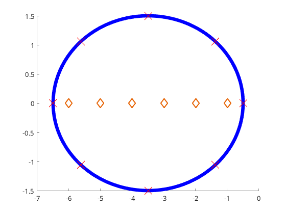
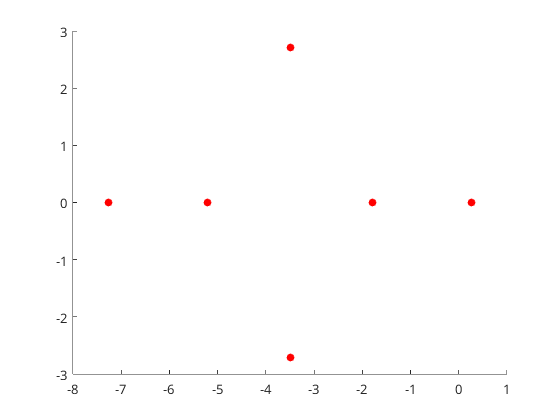
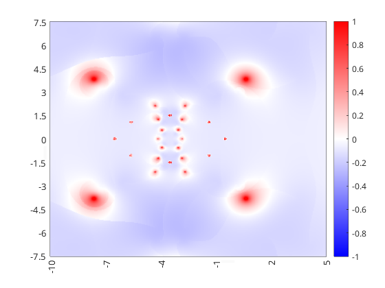
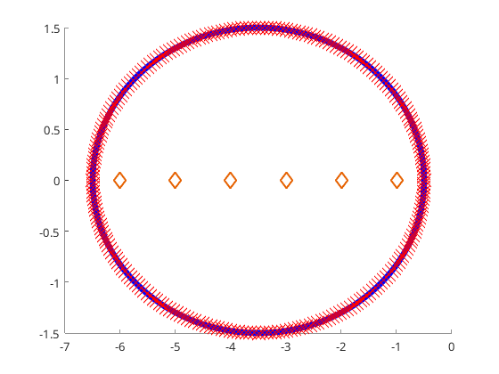
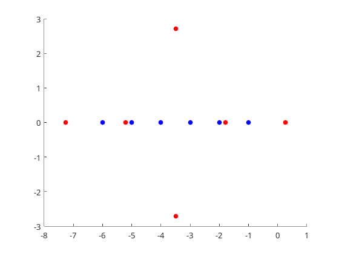
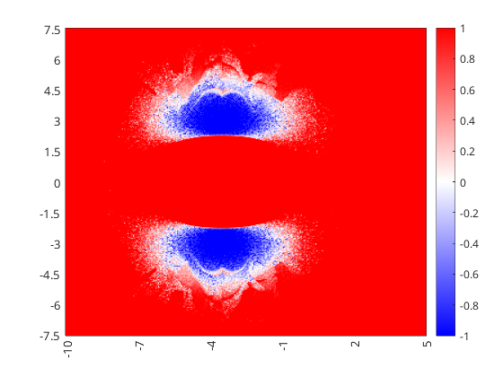
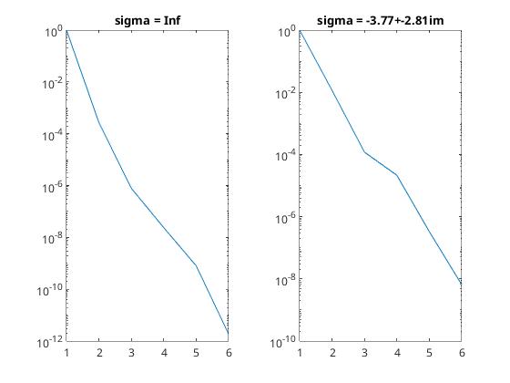

Contents
Setup Sigma
n = 6; refew = -n:-1;
A = diag(refew); B = ones(n,2); C = ones(n,2)';
H = @(z) C*((z*eye(size(A)) - A) \ B);
Quadrature Data, MIMO Case
import Visual.*;
c = Contour.Ellipse(-(n+1)/2,n/2,n/4,8); c.plot_quadrature = true;
o = OperatorData(H);
o.refew = diag(A); o.sample_mode = "Direct";
s = SampleData(o,c); s.ax = gca;
s.ell = 1; s.r = 1;
s.compute();

Size of Data Matrix & extract quadrature/samples from the Contour/SampleData
K = n;
z = c.z; w = c.w;
Ql = s.Ql; Qr = s.Qr; Qlr = s.Qlr;
ERA with Quadrature Data
figure(1);
sigma = Inf;
[Ml,Mr,Mlr] = Numerics.sploewner.build_quadrature_moments(sigma,z,w,Ql,Qr,Qlr,K);
[Db,Ds] = Numerics.sploewner.build_sploewner(sigma,Ml,Mr,Mlr,K);
ew = realize_inorder(Db,Ds); ERA_err = norm(ew-diag(A));
hold on; eraew1 = scatter(real(ew),imag(ew),"red","filled"); hold off;
norm(ew-diag(A))
ans =
4.2973

ERA vs SPLoewner Heatmap on 8 Quadrature Nodes
N = 321; x = linspace(-10,5,N); y = linspace(-7.5,7.5,N); [X,Y] = meshgrid(x,y); G = X + 1i*Y;
SPLoewner_err = zeros(N,N);
parfor i=1:N
for j=1:N
sigma = G(i,j);
[Ml,Mr,Mlr] = Numerics.sploewner.build_quadrature_moments(sigma,z,w,Ql,Qr,Qlr,K);
[Db,Ds] = Numerics.sploewner.build_sploewner(sigma,Ml,Mr,Mlr,K);
ew = realize_inorder(Db,Ds); SPLoewner_err(i,j) = norm(ew-diag(A));
end
end
plot
figure(2);
ls_eravspl = log10(SPLoewner_err./ERA_err);
h = heatmap(x,y,ls_eravspl); clim([-1 1]); colormap(redblue(5000));
CustomXLabels = string(x); CustomYLabels = string(flip(y));
CustomXLabels(mod(x,1) ~= 0) = " "; CustomYLabels(mod(y,0.5) ~= 0) = " ";
h.XDisplayLabels = CustomXLabels; h.YDisplayLabels = CustomYLabels;
set(get(gca,'xlabel'),'rotation',90)
grid off;

Refining Quadrature Data
c.N = 256; s.compute();
z = c.z; w = c.w; Ql = s.Ql; Qr = s.Qr; Qlr = s.Qlr;

figure(1);
sigma = Inf;
[Ml,Mr,Mlr] = Numerics.sploewner.build_quadrature_moments(sigma,z,w,Ql,Qr,Qlr,K);
[Db,Ds] = Numerics.sploewner.build_sploewner(sigma,Ml,Mr,Mlr,K);
ew = realize_inorder(Db,Ds); ERA_err = norm(ew-diag(A))
if exist('eraew2','var') == 1; delete(eraew2); end;
hold on; eraew2 = scatter(real(ew),imag(ew),"blue","filled"); hold off;
ERA_err =
5.1956e-07

ERA vs SPLoewner Heatmap on refined Quadrature Nodes
N = 321; x = linspace(-10,5,N); y = linspace(-7.5,7.5,N); [X,Y] = meshgrid(x,y); G = X + 1i*Y;
SPLoewner_err = zeros(N,N);
parfor i=1:N
for j=1:N
sigma = G(i,j);
[Ml,Mr,Mlr] = Numerics.sploewner.build_quadrature_moments(sigma,z,w,Ql,Qr,Qlr,K);
[Db,Ds] = Numerics.sploewner.build_sploewner(sigma,Ml,Mr,Mlr,K);
ew = realize_inorder(Db,Ds); SPLoewner_err(i,j) = norm(ew-diag(A));
end
end
plot
figure(3);
ls_eravspl = log10(SPLoewner_err./ERA_err);
h = heatmap(x,y,ls_eravspl); clim([-1 1]); colormap(redblue(5000));
CustomXLabels = string(x); CustomYLabels = string(flip(y));
CustomXLabels(mod(x,1) ~= 0) = " "; CustomYLabels(mod(y,0.5) ~= 0) = " ";
h.XDisplayLabels = CustomXLabels; h.YDisplayLabels = CustomYLabels;
set(get(gca,'xlabel'),'rotation',90)
grid off;

singular value decay of ERA and SPLoewner Db
figure(4); tiledlayout(1,2); nexttile;
sigma = Inf;
[Ml,Mr,Mlr] = Numerics.sploewner.build_quadrature_moments(sigma,z,w,Ql,Qr,Qlr,K);
[Db,~] = Numerics.sploewner.build_sploewner(sigma,Ml,Mr,Mlr,K);
Sigma = svd(Db); Sigma = Sigma / Sigma(1);
plot(1:n,Sigma); yscale("log"); xlim([1,n]);
title("sigma = Inf");
nexttile();
[bsn,bsidx] = min(ls_eravspl,[],"all"); sigma = G(bsidx);
[Ml,Mr,Mlr] = Numerics.sploewner.build_quadrature_moments(sigma,z,w,Ql,Qr,Qlr,K);
[Db,~] = Numerics.sploewner.build_sploewner(sigma,Ml,Mr,Mlr,K);
Sigma = svd(Db); Sigma = Sigma / Sigma(1);
plot(1:n,Sigma); yscale("log"); xlim([1,n]);
title(sprintf("sigma = %.2f+%.2fim",real(sigma),imag(sigma)));
fprintf("ERA Error: %e vs Best SPLoewner Error %e\n",ERA_err,SPLoewner_err(bsidx))
ERA Error: 5.195619e-07 vs Best SPLoewner Error 3.228814e-10
